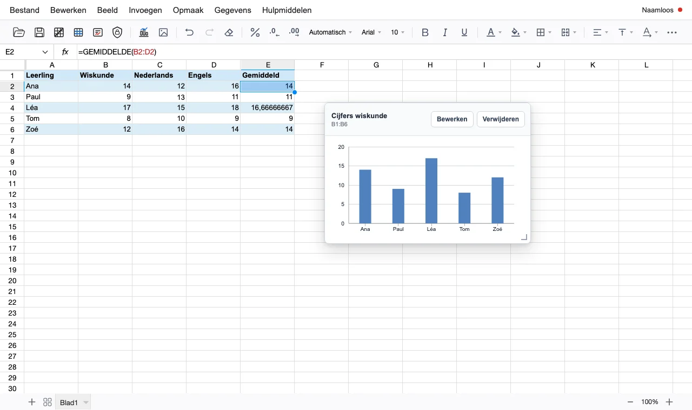
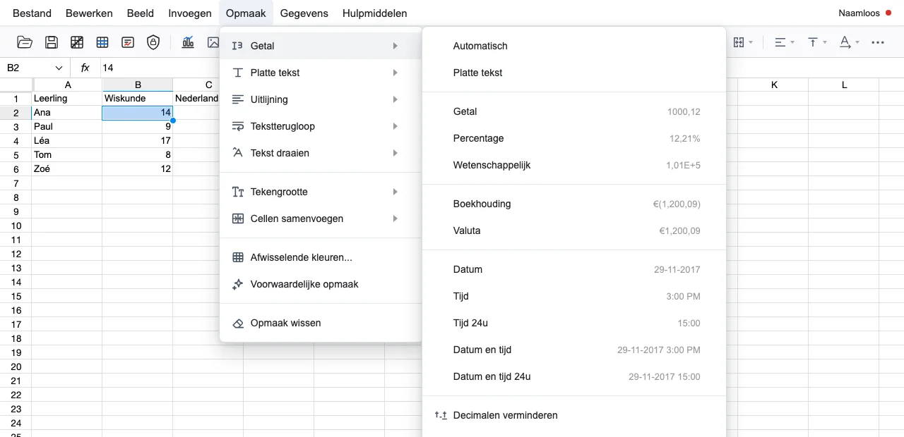

De interface

Van boven naar beneden: de menubalk, de knoppenbalk, de formulebalk, het blad, de bladtabs en de zoom.
De menu’s
| Menu | Inhoud |
|---|---|
| Bestand | openen, opslaan, afdrukken |
| Bewerken | ongedaan maken, opnieuw, omlaag, naar rechts doorvoeren |
| Beeld | rasterlijnen, blokkeren |
| Invoegen | afbeelding, grafiek, selectievakje, keuzelijst |
| Opmaak | getal, tekst, uitlijning, samenvoegen, afwisselende kleuren, voorwaardelijke opmaak |
| Gegevens | sorteren en filteren |
| Hulpmiddelen | beveiligen, deze handleiding (Gebruikershandleiding), DocTools, broncode, versie (Over...) |
Een vinkje wijst op een actieve optie: zichtbare rasterlijnen, geblokkeerde cellen, vet, filter, beveiligde werkmap.

De knoppenbalk
| Knop | Rol |
|---|---|
| openen, opslaan | |
| de rasterlijnen tonen of verbergen | |
| afwisselende kleuren | |
| voorwaardelijke opmaak | |
| beveiligen; blauwig als de werkmap beveiligd is | |
| een grafiek invoegen | |
| een afbeelding invoegen | |
| ongedaan maken, opnieuw | |
| de opmaak wissen | |
| percentage, minder of meer decimalen | |
| Automatisch, Arial, 10 | getalnotatie, lettertype, grootte |
| vet, cursief, onderstreept | |
| tekstkleur, achtergrondkleur | |
| randen, samenvoegen | |
| uitlijningen, draaiing, terugloop | |
| blokkeren | |
| automatische som en andere formules | |
| sorteren en filteren |
Het pijltje van een knop opent zijn keuzes; de knop zelf herhaalt de laatste. In een smal venster zitten de laatste knoppen achter .
De formulebalk
- Links het naamvak: het adres van de selectie, of de naam van het bereik. Zijn pijl somt de benoemde bereiken op en opent het namenbeheer.
- Rechts van fx de inhoud van de cel, formule inbegrepen: die kan daar gewijzigd worden.
Het blad
- Rechtsklikken opent een menu naargelang de plaats: cel, kolom- of rijkop, bladtab.
- Een nieuw blad heeft 84 rijen en 60 kolommen (A tot BH). Er komen er bij met rechtsklikken, Invoegen (rijen en kolommen).
- De blauwe greep aan de hoek van de selectie voert door.
Tabs en zoom
Onderaan voegt een blad toe, somt ze allemaal op (werkbladen). Rechts stellen − en + de zoom in; een klik op het percentage biedt 10 % tot 400 % aan.
Ongedaan maken
of Ctrl Z maakt ongedaan, , Ctrl Y of Ctrl Shift Z doet opnieuw: invoer, plakken, opmaak, invoegingen. De geschiedenis begint opnieuw als een werkmap wordt geopend, de rasterlijnen worden getoond of verborgen, de werkmap wordt beveiligd, of een naam of regel voor voorwaardelijke opmaak wordt toegevoegd. Grafieken horen er niet bij: ze worden met hun knoppen gewijzigd of verwijderd.